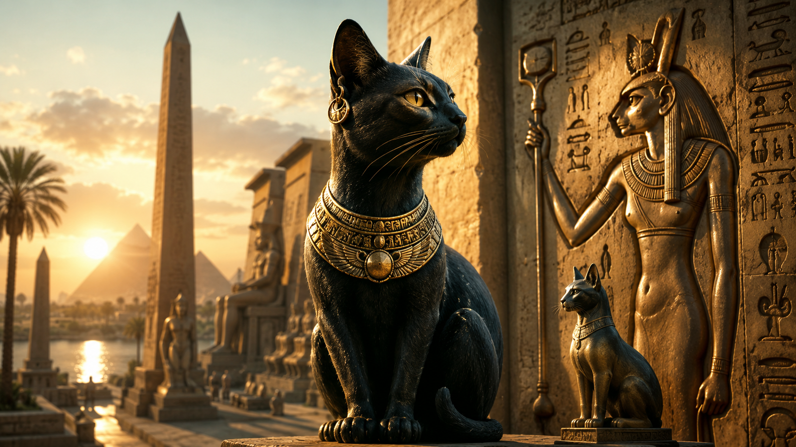

Bir evde yangın çıktığını düşünün. Alevler yükseliyor, içerideki eşyalar yok olma tehlikesiyle karşı karşıya ve insanların ilk yapması gereken şey yangını söndürmek gibi görünüyor. Fakat MÖ 5. yüzyılda Mısır’ı ziyaret eden Yunan tarihçi Herodotos’un anlattığına göre Mısırlılar böyle bir durumda önce kedilerinin ateşe yaklaşmasını engellemeye çalışıyordu. Bir kedi öldüğünde ise ev halkı yas tutuyor, hatta kaşlarını tıraş ediyordu. Herodotos’un Mısır hakkında verdiği her ayrıntıyı sorgulamadan tarihsel gerçek kabul edemeyiz; yine de onun şaşkınlıkla kaydettiği bu hikâyeler önemli bir gerçeğin izini taşır: Kediler Antik Mısır’da sıradan ev hayvanlarından çok daha büyük bir anlam kazanmıştı.
Fakat bu anlam, bugün internette sıkça tekrarlandığı gibi “Mısırlılar kedileri tanrı sanıyor ve gördükleri her kediye tapıyordu” şeklinde açıklanamaz. Antik Mısır dininde hayvanlarla tanrılar arasındaki ilişki bundan çok daha karmaşıktı. Bir hayvan, belirli bir tanrının gücünü, niteliğini veya görünür tezahürünü temsil edebilirdi; fakat bu durum o türün bütün üyelerinin bağımsız birer tanrı olduğu anlamına gelmiyordu. Kedi de özellikle tanrıça Bastet ile kurduğu güçlü ilişki sayesinde dinsel bir sembole dönüştü. Geç Dönem ve Ptolemaios dönemlerinde Bastet adına bırakılan bronz kedi heykelciklerinin son derece yaygınlaşması ve Bubastis ile Saqqara gibi merkezlerde çok sayıda kedi mumyasının bulunması, bu ilişkinin yalnızca edebî anlatılardan ibaret olmadığını arkeolojik olarak da gösteriyor.
Üstelik kedinin Mısır’daki önemini yalnızca Bastet üzerinden açıklamak da yeterli değildir. Kediler evlerin ve tahıl depolarının çevresindeki fare ve sıçanların kontrolünde yararlıydı; yılanlarla mücadele edebiliyor, av sahnelerinde insanların yanında gösteriliyor ve zamanla aile yaşamının tanıdık bir parçasına dönüşüyordu. Aynı hayvanın hem ev içinde koruyucu ve yararlı olması hem de ilahi koruma fikriyle ilişkilendirilmesi, kedinin Mısır kültüründe neden böylesine güçlü bir sembole dönüşebildiğini anlamamızı sağlar. British Museum da kedilerin evleri ve tahıl depolarını kemirgenlerden ve yılanlardan korumaları nedeniyle değer gördüğünü, aynı zamanda zaman içinde güçlü bir dinsel anlam kazandığını vurgular.
Fakat hikâyenin en şaşırtıcı tarafı bundan sonra başlar. Çünkü Mısırlıların kedilere duyduğu saygı, binlerce kedinin özellikle dinsel amaçlarla yetiştirilip öldürülerek mumyalanabildiği bir kült sistemiyle aynı anda var olabiliyordu. İlk bakışta birbirine tamamen zıt görünen bu iki gerçek, aslında Antik Mısır’da “kutsal hayvan” kavramının modern hayvan sevgisinden ne kadar farklı olduğunu gösterir. Bir hayvanın kutsallığı, onun hiçbir koşulda dokunulmaz olduğu anlamına gelmiyordu; kimi zaman tam tersine, tanrılarla iletişim kurulan ritüel sistemin içine alınması anlamına geliyordu. UCL’nin Antik Mısır kaynakları da Geç Dönem’de binlerce kedinin mumyalandığını ve incelemelerin bunların arasında çok genç yaşta ölmüş ya da öldürülmüş hayvanların bulunduğunu gösterdiğini belirtir.
Dolayısıyla “Antik Mısır’da kediler neden kutsaldı?” sorusunun cevabı tek bir nedende saklı değildir. Bunun için önce kedinin Mısır toplumundaki gerçek yaşamına, ardından Bastet’in binlerce yıl içinde geçirdiği dönüşüme ve son olarak hayvan kültlerinin nasıl işlediğine bakmak gerekir. Ancak o zaman kedilerin neden mumyalandığını, neden milyonlarca kedi adak olarak sunulduğunu ve bir kedi öldürmenin neden yabancı yazarların bile dikkatini çekecek kadar ciddi bir mesele hâline gelebildiğini anlayabiliriz.
Antik Mısır’da Kediler Gerçekten Kutsal mıydı?
“Kutsal” kelimesi doğru kullanıldığı sürece evet; kediler Antik Mısır’da güçlü bir dinsel anlam taşıyordu. Fakat burada modern okuyucunun kolayca düşebileceği bir tuzak vardır. Bir kedinin kutsal kabul edilmesi ile kedinin kendisinin bir tanrı olması aynı şey değildir. Antik Mısır dini, tanrısal güçlerin hayvan biçimleri aracılığıyla ifade edilmesine son derece açıktı. Şahin Horus ve başka göksel tanrılarla, ibis ve babun Thoth’la, çakal veya çakalı andıran köpekgiller Anubis’le, dişi aslan Sekhmet gibi tanrıçalarla ilişkilendirilebilirdi. Hayvanın fiziksel özellikleri, tanrının belirli yönlerini görünür kılmanın yollarından biriydi.
Kediler söz konusu olduğunda en güçlü bağlantı Bastet ile kuruldu. Özellikle Mısır tarihinin geç dönemlerinde Bastet kedi veya kedi başlı kadın biçiminde yaygın biçimde temsil edildi ve kedi onun kutsal hayvanı hâline geldi. The Metropolitan Museum of Art koleksiyonundaki çok sayıda Geç Dönem–Ptolemaios dönemi bronz kedi heykelciği, bu ilişkinin maddi kanıtları arasındadır. Bu heykelcikler tapınaklara adak olarak bırakılabiliyor veya kedi mumyalarıyla birlikte kutsal alanlardaki katakomblara yerleştirilebiliyordu.
Fakat “Mısırlılar bütün kedileri Bastet’in kendisi sayıyordu” demek de fazla ileri gider. Hayvan kültlerinde farklı düzeylerde kutsallık bulunabiliyordu. Bazı hayvanlar belirli bir tanrının yaşayan tezahürü olarak özel biçimde seçilirken, aynı türe ait başka hayvanlar tanrıya sunulan adakların parçası olabiliyordu. Evlerde yaşayan kediler ise aynı zamanda insanların beslediği, günlük yaşamlarını paylaştığı gerçek hayvanlardı. Dolayısıyla evcil kedi, kutsal sembol, tanrısal tezahür ve adak hayvanı kategorilerini birbirine karıştırmamak gerekir.
Bu ayrım, kedi mumyalarının neden var olduğunu anlamamız açısından özellikle önemlidir. Eğer her kedi dokunulmaz bir tanrı olarak kabul edilseydi, binlercesinin tapınak ekonomisi içerisinde yetiştirilip öldürülerek mumyalanmasını açıklamak neredeyse imkânsız olurdu. Oysa arkeolojik bulgular tam olarak böyle bir uygulamanın geliştiğini gösteriyor. Kutsallık burada modern anlamdaki “hayvana zarar verilemez” düşüncesinden çok, hayvanın tanrı ile insan arasında dinsel bir araç hâline gelmesiyle ilgilidir.
Bu nedenle Antik Mısır kedileri hakkında kullanılabilecek en doğru ifadelerden biri şudur: Mısırlılar kedilere basitçe “tapmıyorlardı”; kediler belirli tanrısal güçlerle, özellikle Bastet ile ilişkilendiriliyor ve bu ilişki bazı dönemlerde onları Mısır’ın en önemli kutsal hayvanlarından biri hâline getiriyordu.
Kediler Antik Mısır’da Ne Zaman Önem Kazandı?
Kedinin Mısır tarihindeki yerini anlamanın en önemli yollarından biri, onun başlangıçtan itibaren değişmeden aynı statüye sahip olmadığını fark etmektir. Antik Mısır yaklaşık üç bin yıllık firavunluk tarihine sahipti ve bu kadar uzun bir zaman diliminde tanrıların özellikleri, hayvanlarla kurulan sembolik ilişkiler ve ibadet biçimleri sürekli dönüşüyordu. Bugün çok tanıdık olan “kedi başlı Bastet” görüntüsünü alıp Eski Krallık’ın başına yerleştirmek bu nedenle tarihsel açıdan yanıltıcıdır.
Bastet’in erken dönem kimliği, daha sonraki sevimli ev kedisi görüntüsünden çok dişi aslan karakterine yakındı. Global Egyptian Museum’un özetlediği Mısırbilimsel gelenekte Bastet’in Eski Krallık tasvirleri çoğunlukla dişi aslan başlıdır; onun evcil kediyle belirgin biçimde özdeşleşmesi sonraki dönemlerde güçlenmiştir. UCL’nin Digital Egypt kaynağı da Bastet’in erken dönemde aslan başlı olduğunu ve özellikle Üçüncü Ara Dönem’den itibaren kedi ya da kedi başlı biçiminin belirginleştiğini aktarır.
Bu dönüşüm son derece anlamlıdır. Mısır dini dünyasında kedigillerin iki farklı yüzü bulunuyordu. Dişi aslan çölün, güneşin yakıcı gücünün, saldırganlığın ve kraliyet kudretinin korkutucu taraflarını temsil edebilirken evcil kedi aynı kedigiller ailesinin daha kontrollü, ev içi ve koruyucu yüzünü çağrıştırabiliyordu. Bastet’in karakterindeki değişim de bu geniş sembolik alan içinde gelişti.
Fakat bu, Bastet’in “önce tamamen savaş tanrıçasıydı, sonra bir gün kedi tanrıçasına dönüştü” şeklinde keskin bir tarih çizgisi olduğu anlamına gelmez. Mısır tanrıları birbirlerinin özelliklerini paylaşabiliyor, farklı bölgelerde farklı teolojik kimlikler kazanabiliyor ve eski özelliklerini yeni özellikler edinirken tamamen kaybetmeyebiliyordu. Bastet de koruma, kadınlık, annelik, müzik, neşe ve ev yaşamıyla ilişkilendirilirken güneşsel ve tehlikeli yönlerini bütünüyle geride bırakmadı.
İşte kedinin kutsal anlamı tam olarak bu noktada derinleşir. Mısırlıların gözünde kedi yalnızca sakin bir ev hayvanı değildi. Sessizce oturabilen, yavrularını koruyan ve bir anda son derece etkili bir avcıya dönüşebilen bir hayvandı. Bu iki yönlülük, Mısır tanrıçalarında sıkça gördüğümüz koruyucu şefkat ile yıkıcı güç arasındaki geçişe son derece uygundu.
Bastet Kimdi ve Kedilerle İlişkisi Nasıl Kuruldu?
Bastet, kökleri Mısır tarihinin erken dönemlerine kadar uzanan önemli bir tanrıçaydı ve başlıca kült merkezi Nil Deltası’ndaki Bubastis kentiydi. Kentin Mısırca adı Per-Bastet, kabaca “Bastet’in Evi” veya “Bastet’in Tapınağı” anlamıyla ilişkilidir. Yunanların Bubastis adını verdiği bu kent, zamanla tanrıçanın kültünün en önemli merkezlerinden biri hâline geldi.
Bastet’in kimliği yalnızca kediler üzerinden kurulmamıştı. O, Aşağı Mısır’ın koruyucu tanrıçalarından biri olarak güneş tanrısı Ra ile ilişkilendirildi ve bazı geleneklerde Ra’nın kızı veya Ra’nın Gözü olarak kabul edildi. Ra’nın Gözü kavramı Mısır mitolojisinde tek bir tanrıçaya ait sabit bir kimlik değildir; Sekhmet, Hathor, Wadjet ve Bastet gibi farklı tanrıçalar farklı bağlamlarda bu rolü üstlenebilir. Göz, güneş tanrısının hem düşmanlarını yok edebilen saldırgan gücünü hem de kralı ve kozmik düzeni koruyan etkin kuvvetini temsil ediyordu.
Bu durum Bastet ile Sekhmet arasındaki benzerliğin de nedenini açıklar. Sekhmet dişi aslan başlı, tehlikeli ve savaşçı bir tanrıça olarak güneşin yakıcı ve yıkıcı gücüyle güçlü biçimde bağlantılıydı. Bastet’in erken aslan karakteri ise iki tanrıçanın belirli özelliklerde birbirine yaklaşmasına imkân veriyordu. Daha sonraki dönemlerde Bastet’in evcil kedi biçiminin öne çıkması, onu Sekhmet’in daha sakin ve koruyucu karşılığı gibi yorumlamaya elverişli hâle getirdi; fakat ikisini basitçe “aynı tanrıçanın iyi ve kötü hâli” olarak tanımlamak Mısır teolojisinin karmaşıklığını gereğinden fazla sadeleştirir. British Museum da Bastet’i annelik ve koruyuculukla bağlantılı, Sekhmet’in daha yumuşak karşılığı olarak açıklar.
Kedinin Bastet’in sembolü hâline gelmesiyle hayvanın davranışları tanrıçanın nitelikleriyle güçlü bir uyum kazandı. Kedi yavrularına karşı koruyucuydu; evin çevresindeki zararlı hayvanları avlıyor, gerektiğinde saldırganlaşabiliyor fakat aynı zamanda insanlarla aynı yaşam alanını paylaşabiliyordu. Böylece kedinin gerçek davranışları ile Bastet’in koruyan fakat gerektiğinde tehlikeli olabilen tanrısal karakteri birbirini destekledi.
Geç Dönem’e gelindiğinde bu bağlantı artık Mısır sanatında son derece görünürdü. Bastet kedi başlı kadın olarak tasvir edilebildiği gibi tamamen kedi biçiminde de gösterilebiliyordu. Bronz kedi heykelcikleri tapınaklara adanıyor, bazıları küpe, kolye veya koruyucu wedjat gözü gibi ayrıntılar taşıyordu. Bugün British Museum’daki ünlü Gayer-Anderson Kedisi, bu geleneğin en etkileyici örneklerinden biridir ve yaklaşık MÖ 600 civarına tarihlenir.
Burada önemli olan, kedi biçiminin yalnızca “Bastet kedileri seviyordu” gibi basit bir bağlantıdan doğmadığını görmektir. Antik Mısır sanatında hayvan biçimi, tanrının karakterini görünür hâle getiren bir teolojik dil işlevi görüyordu. Bastet’in kedisi de koruyuculuk, doğurganlık, annelik, uyanıklık ve gerektiğinde ortaya çıkan saldırgan gücün tek bir hayvanda birleşebildiği son derece etkili bir semboldü.
Antik Mısır’da Kedi Sadece Bastet ile mi İlişkiliydi?
Kedinin Mısır dinindeki önemini yalnızca Bastet’e indirgemek başka bir yaygın hatadır. Bastet kuşkusuz evcil kediyle en güçlü biçimde özdeşleşen tanrıçaydı; ancak kedigillerin dinsel sembolizmi bundan çok daha genişti. Dişi aslan Sekhmet, Tefnut, Mut ve Pakhet gibi farklı tanrıçalarla ilişkilendirilebiliyor; kedi biçimi ise bazı metinlerde erkek tanrılar için bile kullanılabiliyordu.
Bunun en çarpıcı örneklerinden biri Ra’nın Büyük Kedisidir. Ölüler Kitabı’nın 17. bölümündeki bir gelenekte güneş tanrısı Ra, Heliopolis’teki kutsal ağacın yanında kaosun ve güneşin düşmanı olan yılanı öldüren büyük erkek kediyle ilişkilendirilir. UCL’nin Mısırbilim kaynağının da dikkat çektiği bu örnek, “Mısır’da kedi = Bastet” formülünün yetersiz olduğunu açıkça gösterir.
Bu sahnenin arkasında kedinin günlük hayatta gözlemlenebilen avcılık yeteneğinin dinsel sembolizme aktarılması vardır. Bir kedinin yılanı öldürmesi, Mısırlı bir gözlemci için yalnızca doğal bir davranış değildi; düzeni tehdit eden tehlikenin ortadan kaldırılmasını çağrıştırabilecek güçlü bir görüntüydü. Mısır düşüncesinde güneş tanrısının her gece kaos güçleriyle mücadelesi ve sabah yeniden doğması, maat ile kaos arasındaki sürekli mücadele çerçevesinde anlaşılırdı. Yılanın karşısındaki büyük kedi bu kozmik zaferin hayvan biçimindeki ifadelerinden biri hâline gelebiliyordu.
Dolayısıyla kedinin kutsallığı yalnızca tek bir tanrıçanın popülerliği sonucunda ortaya çıkmış değildi. Bastet kültü bu ilişkinin merkezini oluşturdu; fakat kedinin avcılığı, koruyuculuğu ve kedigillerin Mısır dinindeki daha geniş güneşsel sembolizmi, hayvanın anlamını çok daha derin bir zemine oturtuyordu.
Kediler Antik Mısır’da Günlük Hayatta Neden Değerliydi?
Dinsel anlamın yanında kedilerin son derece pratik bir değeri vardı. Nil’in düzenli taşkınları sayesinde gelişen Mısır tarımı büyük miktarda tahıl üretimine dayanıyordu ve hasadın ardından tahılın depolanması gerekiyordu. Tahıl depoları ise fare ve sıçanlar için son derece cazip ortamlardı. Kemirgenler yalnızca insanların yiyeceğini tüketmiyor, depolanmış ürünün zarar görmesine de yol açıyordu. Küçük avcılar olan kedilerin insan yerleşimlerine yaklaşması bu nedenle iki taraf için de avantajlı bir ilişki yaratmış olmalıdır.
İnsanların bulunduğu yerlerde tahıl vardı; tahılın bulunduğu yerde kemirgenler vardı; kemirgenlerin bulunduğu yerde ise yabani kediler için kolay av bulunuyordu. İnsanlar da bu avcıların varlığından fayda görüyordu. Kedinin insan çevresine yaklaşmasını sağlayan bu ekolojik ilişki, yalnızca Mısır’a özgü bir süreç olarak görülmemelidir; fakat Nil Vadisi’nin tarımsal yapısı kedilerin insanlar için değerini açık biçimde artırıyordu.
Kedilerin yararı kemirgenlerle sınırlı değildi. Antik kaynaklar ve Mısır tasvirleri onların yılanlarla ilişkilendirildiğini de gösterir. British Museum, kedilerin evleri ve tahıl depolarını fare, sıçan ve yılanlardan korumaları nedeniyle değerli olduklarını belirtir. Böylece kedi gerçek yaşamda insanın yiyeceğini ve evini tehdit eden hayvanları avlarken dinsel sembolizmde de kötücül veya tehlikeli güçleri alt eden koruyucu figür hâline gelebiliyordu.
Ancak “Mısırlılar kedileri sadece tahıl ambarlarını farelerden korudukları için kutsallaştırdı” demek de yeterli değildir. Eğer ekonomik yarar tek başına bir hayvanın kutsallaşmasını açıklasaydı, Mısır’ın bütün yararlı hayvanlarının aynı dinsel statüyü kazanmasını beklemek gerekirdi. Antik Mısır dini böyle işlemez. Hayvanın gerçek özellikleri, tanrısal mitoloji, yerel kültler, krallık ideolojisi ve yüzyıllar içinde gelişen ritüeller birbirini etkiler. Kedinin avcılığı onun sembolik anlamını desteklemiş olabilir; fakat Bastet kültünün yükselişi ve kedigillerin daha eski dini sembolizmi olmadan hikâye tamamlanmaz.
Antik Mısır’da Kediler Evcil Hayvan mıydı?
Kedilerin yalnızca tapınaklarda yaşayan kutsal hayvanlar olduğunu düşünmek de yanlıştır. Mısır mezar sanatında kediler insanların gündelik dünyasının içinde karşımıza çıkar. Özellikle Yeni Krallık döneminden itibaren mezar sahnelerinde sahiplerinin sandalyelerinin altında oturan veya aileyle birlikte gösterilen kediler görülür. Bu tasvirler, kedilerin insan yaşam alanlarına yerleştiğini ve en azından toplumun bazı kesimlerinde ev hayvanı olarak önemli bir yere sahip olduğunu gösterir.
Kedinin bir sandalyenin altında gösterilmesi basit bir dekoratif ayrıntı olmak zorunda değildir. Mısır mezar sanatında nesnelerin ve hayvanların yerleşimi sembolik çağrışımlar taşıyabilir; fakat aynı zamanda insanların gerçek yaşamındaki yakınlığın da izlerini verir. Kedilerin tasmalara, süslemelere veya insanlarla doğrudan ilişkilendirilen sahnelere sahip olması, onların yalnızca uzaktan saygı duyulan vahşi hayvanlar olmadığını açıkça gösterir. British Museum da bazı mezar resimlerinde kedilerin sahiplerinin yanında, hatta yiyecekle birlikte tasvir edildiğini belirtmektedir.
En ünlü örneklerden biri Thebai’deki Nebamun’un mezar şapelinden gelen bataklık avı sahnesidir. Burada Nebamun papirüsler arasında kuş avlarken bir kedi de avın içinde yer alır. Kedinin pençeleri ve ağzıyla kuş yakaladığı görülür. Bu sahnenin ne ölçüde gerçek bir av pratiğini, ne ölçüde ölüm ve yeniden doğuşla bağlantılı sembolik bir kompozisyonu temsil ettiği ayrıca tartışılabilir; fakat kedinin insanla birlikte hareket eden tanıdık bir hayvan olarak tasvir edildiği açıktır.
Bu noktada kedinin Mısır toplumundaki olağanüstü konumu daha iyi görünmeye başlar. Aynı hayvan evde insanın yanında yaşayabiliyor, av sahnesine katılabiliyor, zararlı hayvanları öldürebiliyor, bir tanrıçanın sembolüne dönüşebiliyor ve öldüğünde mumyalanarak kutsal alana bırakılabiliyordu. Kedinin Mısır’daki hikâyesini ilginç yapan tam olarak bu katmanların birbirinin üzerine binmesidir.
Kediler İlk Kez Antik Mısır’da mı Evcilleştirildi?
Antik Mısır kedileri hakkında en yerleşmiş bilgilerden biri, “kediyi ilk evcilleştiren toplum Mısırlılardı” iddiasıdır. Mısır’ın evcil kedinin tarihindeki önemi tartışılmaz olsa da günümüzdeki arkeozoolojik ve genetik araştırmalar bu hikâyenin eskiden düşünüldüğünden daha karmaşık olduğunu gösteriyor. İnsanlarla kediler arasındaki yakın ilişkinin izleri Mısır’dan daha eski dönemlerde Doğu Akdeniz ve Yakın Doğu’nun başka bölgelerinde de görülür.
Bu nedenle kedinin evcilleştirilmesini tek bir yerde, tek bir tarihte ve tek bir insan topluluğunun gerçekleştirdiği ani bir olay olarak düşünmek yerine uzun süreli bir yakınlaşma ve seçilim süreci olarak değerlendirmek daha sağlıklıdır. Tarım toplumlarının tahıl depoları kemirgenleri çekmiş, kemirgenler yabani kedileri insan yerleşimlerine yaklaştırmış, insanlara karşı daha toleranslı kediler bu yeni ekolojik ortamdan avantaj sağlamış olabilir. Zaman içinde insanlarla kediler arasında giderek daha yakın bir ilişki gelişmiştir.
Mısır’ın olağanüstü rolü ise kediyi yalnızca insan çevresinde yaşayan faydalı bir avcı olarak bırakmamasında ortaya çıkar. Nil Vadisi’nde kedi sanata, aile yaşamına, tanrısal ikonografiye, tapınak ekonomisine ve ölüm ritüellerine kadar girerek başka hiçbir yerde kolayca karşılaştırılamayacak ölçekte kültürel bir anlam kazanmıştır.
Bu ayrım önemlidir. “Kediler ilk kez Mısır’da evcilleştirildi” demek tartışmalı ve fazla kesin bir iddiadır; “Antik Mısır, insan-kedi ilişkisinin tarihteki en güçlü kültürel ve dinsel biçimlerinden birini geliştirdi” demek ise elimizdeki kanıtlarla çok daha sağlam biçimde savunulabilir.
Ve kedilerin hikâyesinin asıl şaşırtıcı bölümü burada başlamaktadır. Çünkü Mısırlıların evlerinde beslediği ve tanrıçaların koruyucu gücüyle ilişkilendirdiği bu hayvanlardan muazzam sayılarda mumya üretildi. Bu mumyaların neden yapıldığı, kedilerin doğal olarak öldükten sonra mı mumyalandığı yoksa özellikle adak olmak üzere mi yetiştirildiği sorusu, “Mısırlılar kedileri kutsal sayıyordu” şeklindeki basit anlatıyı tamamen değiştirecek kadar önemlidir.
Antik Mısır’da Kediler Neden Mumyalanıyordu?
Kedi mumyaları, Antik Mısır’da kedilerin kutsallığını anlamak için elimizdeki en önemli arkeolojik kanıtlardan biridir; fakat aynı zamanda konunun en kolay yanlış anlaşılan tarafını oluşturur. İlk bakışta bir kedinin özenle sarılıp mumyalanması, onun çok sevilen bir ev hayvanı olduğu ve sahibinin ölümünden sonra onu insanlarda olduğu gibi sonsuz yaşama hazırladığı izlenimini verebilir. Bazı kedilerin gerçekten sahipleriyle özel bir bağ kurmuş olması ve ölümden sonra özenle gömülmüş olması mümkündür. Ancak özellikle MÖ 1. binyılda büyük ölçekte gelişen hayvan mumyalama uygulamalarına baktığımızda, bulunan kedi mumyalarının tamamını “sahibinin ölen evcil kedisi” şeklinde açıklamak mümkün değildir. Kedi mumyalarının çok büyük bölümü, tanrılara sunulan adak hayvanlarıyla bağlantılı dinsel bir sistemin parçasıydı.
Bu sistemi anlamak için modern dünyadaki mezarlık düşüncesinden biraz uzaklaşmak gerekir. Bir Mısırlı, belirli bir tanrıya dua etmek, ondan yardım istemek, teşekkür etmek veya onunla ritüel bir bağ kurmak amacıyla tanrıyla ilişkilendirilen bir hayvanın mumyasını adak olarak sunabiliyordu. Bastet söz konusu olduğunda bunun en doğal araçlarından biri kediydi. Böylece kedi mumyası, yalnızca ölmüş bir hayvanın korunmuş bedeni olmaktan çıkıyor ve insan ile tanrıça arasında kurulan ilişkinin maddi bir parçasına dönüşüyordu. Bir kişinin Bastet’e kedi mumyası sunması, kedinin kendisine bağımsız bir tanrı olarak tapması anlamına gelmiyordu; hayvan, Bastet’in kutsal dünyasıyla bağlantılı olduğu için adak değeri kazanıyordu.
Uygulamanın boyutları zamanla olağanüstü seviyelere ulaştı. Özellikle Geç Dönem ve Ptolemaios dönemlerinde yalnızca kediler değil; ibisler, şahinler, köpekler, timsahlar, balıklar ve başka hayvanlar da belirli tanrıların kültleriyle bağlantılı olarak mumyalanıyordu. Saqqara’daki hayvan nekropolleri, Bubastis ve başka kült merkezlerinde bulunan kalıntılar, bunun münferit bir gelenek olmadığını gösterir. Tapınaklar çevresinde hayvanların yetiştirilmesi, mumyalanması, adakların hazırlanması ve kutsal alanlara yerleştirilmesiyle bağlantılı geniş bir dinsel ve ekonomik sistem ortaya çıkmıştı.
Kedi mumyalarının dış görünüşü de bu dinsel değeri yansıtabiliyordu. Bazıları keten şeritlerin geometrik desenler oluşturacak biçimde son derece özenli sarılmasıyla hazırlanmış, bazılarına kedinin yüzünü hatırlatan ayrıntılar verilmişti. Fakat dışarıdan son derece etkileyici görünen bir mumyanın içinde her zaman eksiksiz bir kedi bulunmuyordu. Modern radyografi ve bilgisayarlı tomografi incelemeleri, bazı hayvan mumyalarının tam iskelet içerdiğini, bazılarının yalnızca kemik parçaları veya kısmi kalıntılar barındırdığını, bazı paketlerin ise beklenenden çok daha az hayvansal materyal içerdiğini göstermiştir. Bu durum geçmişte zaman zaman doğrudan “sahte mumya ticareti” şeklinde yorumlanmış olsa da her örneği dolandırıcılık olarak açıklamak doğru değildir. Ritüel açıdan hayvanın tamamının bulunmasının her durumda zorunlu olup olmadığını bilmiyoruz; dolayısıyla arkeolojik bulguların izin verdiğinden daha kesin konuşmamak gerekir.
Asıl çarpıcı gerçek ise bazı mumyalanmış kedilerin oldukça genç yaşta ölmüş olmasıdır. Osteolojik ve görüntüleme çalışmaları, hayvan mumyası üretiminin belirli dönemlerde böylesine büyük bir talebe ulaşmasının yalnızca doğal yollarla ölen hayvanlarla karşılanamayabileceğini düşündürmektedir. Bazı örneklerde ölüm biçimine ilişkin travmatik bulgular da tespit edilmiştir. Bu nedenle araştırmacılar, kült merkezlerinin çevresinde kedilerin adak amacıyla yetiştirildiği ve bir bölümünün belirli yaşlara geldiğinde öldürülerek mumyalandığı görüşünü uzun süredir tartışmaktadır.
Modern okuyucu açısından paradoks tam burada ortaya çıkar: Bir toplum hem kedilere büyük dinsel önem verebilir hem de onları adak olarak öldürebilir miydi? Antik Mısır’ın kutsallık anlayışını modern hayvan hakları düşüncesiyle eşitlediğimizde bu iki davranış birbiriyle çelişir. Fakat Mısırlılar açısından hayvanın ritüel amaçla öldürülmesi, mutlaka ona yönelik saygısızlık anlamına gelmiyordu. Hayvanın bedeni mumyalama yoluyla korunuyor ve kutsal bir bağlam içerisinde tanrıya sunuluyordu. Dolayısıyla kedi mumyaları, Mısırlıların kedileri ne kadar “sevdiklerini” ölçen basit göstergeler değil; hayvan, tanrı, ölüm ve adak arasındaki çok daha karmaşık bir dinsel ilişkinin ürünleriydi.
Bu ayrımı kurduğumuzda, Antik Mısır kedileri hakkındaki en büyük görünen çelişkilerden biri ortadan kalkar. Evde yaşayan bir kedi insanlarla yakın ilişki kurabilir, başka bir kedi Bastet kültü içerisinde adak amacıyla yetiştirilebilir, belirli kutsal hayvanlar ise tanrısal gücün özel tezahürleri olarak çok farklı muamele görebilirdi. Biz bugün bunların hepsine yalnızca “kutsal kedi” dediğimizde, Mısırlıların kendi dinsel dünyasında birbirinden farklı olan kategorileri tek bir kavram altında toplamış oluruz.
Milyonlarca Kedi Mumyalandığı Doğru mu?
Antik Mısır hayvan mumyaları hakkında sıkça kullanılan “milyonlarca” ifadesi ilk bakışta abartılı görünse de hayvan kültlerinin toplam ölçeği düşünüldüğünde bütünüyle temelsiz değildir. Mısır’ın farklı nekropollerinde yalnızca kedilere değil, çeşitli kutsal hayvanlara ait son derece büyük mumya toplulukları bulunmuştur. Özellikle 19. ve 20. yüzyıldaki kazılar, yeraltı galerilerinin ve katakombların adak hayvanlarının kalıntılarıyla doldurulabildiğini ortaya çıkardı. Bununla birlikte “Mısır’da tam olarak şu kadar milyon kedi mumyalandı” şeklinde kesin bir toplam sayı vermek yanıltıcı olur; çünkü nekropollerin tamamı eksiksiz biçimde korunmamış, eski kazıların kayıt standartları günümüzdekilerle aynı olmamış ve çok sayıda hayvan mumyası modern bilimsel incelemeler yapılmadan önce yerinden çıkarılmıştır.
Bu ölçekte bir üretim yine de çok önemli bir şeyi gösterir. Hayvan mumyalama, birkaç rahibin zaman zaman gerçekleştirdiği sıra dışı bir ritüel değildi. Özellikle MÖ 1. binyılda bazı kült merkezlerinde büyük bir toplumsal talebe cevap veren kurumsallaşmış bir uygulamaya dönüşmüştü. Tapınağa gelen hacılar veya ziyaretçiler tanrıya adak sunuyor, rahiplik sistemi bu ritüellerin gerçekleştirilmesinde rol oynuyor ve hayvanların yetiştirilmesinden mumyalanmasına kadar uzanan bir organizasyon oluşuyordu. Dolayısıyla kedi kültünün büyüklüğü yalnızca insanların hayvana duyduğu hayranlığı değil, tapınakların çevresinde gelişen dinsel ekonominin boyutlarını da yansıtır.
Kedi mumyalarının yoğunluğu aynı zamanda Bastet kültünün geç dönemlerde kazandığı popülerliğin maddi izlerinden biridir. Bir tanrıçanın kültünün ne kadar yaygın olduğunu yalnızca yazılı ilahilerden veya kraliyet anıtlarından anlamaya çalışmak, toplumun daha geniş kesimlerinin dinsel deneyimini gözden kaçırabilir. Küçük bronz heykelcikler, amuletler ve hayvan mumyaları ise sıradan insanların tanrılarla ilişki kurma biçimleri hakkında farklı bir pencere açar. Bu nedenle kedi mumyaları, Antik Mısır’ın yalnızca “garip” bir cenaze uygulaması değil, halk dindarlığını anlamamızı sağlayan büyük bir arkeolojik arşivdir.
Bubastis Neden Kedilerin Şehri Olarak Biliniyordu?
Kediler ile Bastet arasındaki ilişkinin coğrafi merkezi Nil Deltası’nın doğusunda bulunan Bubastis idi. Antik Mısırlıların Per-Bastet olarak adlandırdığı kent, adını doğrudan tanrıçadan alıyordu ve Bastet’in başlıca kült merkeziydi. Kentin tarihi Bastet’in kedi biçiminin yaygınlaşmasından çok daha eskiye uzanır; bu nedenle Bubastis’i başlangıcından itibaren yalnızca “kedi tapınağının bulunduğu şehir” şeklinde düşünmemek gerekir. Ancak Bastet kültünün gelişmesiyle birlikte kent, kedilerin dinsel anlamının en yoğun biçimde görüldüğü merkezlerden biri hâline geldi.
Bubastis hakkında elimizde yalnızca arkeolojik kanıtlar yoktur. Herodotos da MÖ 5. yüzyıldaki Mısır seyahatini anlatırken Bastet’in Bubastis’teki festivaline dikkat çekici bir yer ayırır. Onun anlatısına göre kadın ve erkeklerden oluşan büyük kalabalıklar teknelerle kente geliyor, yolculuk sırasında müzik yapılıyor ve festival son derece canlı kutlanıyordu. Herodotos katılımcı sayısını yüz binlerle ifade edecek kadar ileri gider. Bu tür rakamların antik tarih yazımında çoğu zaman abartılı olabileceğini unutmamak gerekir; dolayısıyla verdiği sayıyı modern nüfus istatistiği gibi kullanamayız. Buna karşılık anlatının kendisi, Bubastis festivalinin yabancı bir gözlemcinin dikkatini çekecek ölçüde önemli olduğunu gösterir.
Herodotos ayrıca Bastet’i Yunan tanrıçası Artemis ile özdeşleştirir. Bu ifade de “Bastet aslında Artemis’ti” şeklinde anlaşılmamalıdır. Yunan ve Romalı yazarlar yabancı tanrıları kendi panteonlarındaki benzer gördükleri tanrılarla açıklamaya sıkça başvuruyordu. Modern araştırmacının yapması gereken, bu eşleştirmeyi doğrudan Mısır teolojisi olarak kabul etmek değil, Herodotos’un Mısır dinini Yunan okuyucusuna kendi kültürel kavramları aracılığıyla aktardığını fark etmektir.
Bubastis’in önemi kedi mumyaları açısından da büyüktür. Kentte Bastet kültüyle bağlantılı kedi gömüleri bulunması, tanrıça ile hayvan arasındaki ilişkinin yalnızca sanatsal bir sembol olmadığını gösterir. Buraya gelen bir ziyaretçi Bastet’e dua edebilir, adak bırakabilir ve tanrıçanın kutsal hayvanıyla bağlantılı ritüellere katılabilirdi. Böylece Bubastis, kedinin ev yaşamındaki koruyucu rolünün devletin ve tapınağın büyük dinsel dünyasıyla birleştiği yerlerden biri hâline geldi.
Fakat Bubastis tek merkez değildi. Saqqara gibi başka bölgelerde de büyük kedi nekropolleri ve Bastet’le bağlantılı kutsal alanlar ortaya çıkarılmıştır. Bu nedenle “bütün kutsal kediler Bubastis’te yaşıyor veya oraya gömülüyordu” şeklinde bir düşünce doğru değildir. Bastet’in kült merkezi Bubastis olsa da kediyle bağlantılı dinsel uygulamalar Mısır’ın çok daha geniş bir coğrafyasına yayılmıştı.
Bir Kedi Öldüğünde Mısırlılar Gerçekten Yas Tutuyor muydu?
Antik Mısır kedileriyle ilgili en çok tekrarlanan bilgilerden biri, bir ev kedisi öldüğünde bütün ailenin kaşlarını tıraş ettiği iddiasıdır. Bu bilginin temel kaynağı yine Herodotos’tur. Historiai’nin ikinci kitabında Mısır’ın hayvanlara ilişkin geleneklerini anlatırken, bir evde kedi doğal biçimde öldüğünde o evde yaşayanların kaşlarını tıraş ettiğini; köpek öldüğünde ise daha kapsamlı bir tıraş uygulandığını aktarır. Kedilerin öldükten sonra kutsal yapılara götürülerek mumyalandığını da belirtir.
Burada iki uçtan da kaçınmamız gerekir. Herodotos’un yazdığını yalnızca “Yunan gezginin uydurduğu hikâye” diyerek tamamen reddetmek için yeterli nedenimiz yoktur; fakat onun verdiği her ayrıntıyı bütün Mısır tarihinde, bütün bölgelerde ve bütün toplumsal sınıflarda uygulanmış değişmez bir yasa gibi sunmak da doğru değildir. Herodotos Mısır’ı ülkenin binlerce yıllık tarihinin oldukça geç bir aşamasında ziyaret etti ve gözlemlerini kendi kültürel perspektifinden aktardı. Dolayısıyla onun tanıklığı özellikle Geç Dönem Mısır’ındaki hayvan kültlerinin gücünü anlamamız açısından değerlidir, ancak üç bin yıllık Mısır tarihinin tamamına otomatik olarak genellenemez.
Yine de kedi mumyaları, kedi biçimli adak heykelcikleri ve Bastet kültünün arkeolojik yaygınlığı düşünüldüğünde, kedilerin ölümünün dinsel anlam taşıması şaşırtıcı değildir. Bazı evcil hayvanların sahipleriyle duygusal bağ kurduğu da mezar sanatından ve hayvanlara verilen adlardan anlaşılabilir. Antik Mısırlıları yalnızca ritüel hesaplarla hareket eden insanlar olarak görmek, onların hayvanlarla gerçek duygusal ilişkiler geliştirebildiğini gözden kaçırır.
Bu nedenle kaş tıraşı hikâyesinin bize verdiği en güvenli sonuç, “Mısır’da her kedi öldüğünde herkes kesinlikle kaşını kazıyordu” değildir. Daha önemli olan, Herodotos’un bu uygulamayı kaydetmeye değer bulduğu bir dönemde kedilerin ölümüyle yas ve dinsel davranış arasında belirgin bir ilişkinin bulunmasıdır.
Antik Mısır’da Kedi Öldürmenin Cezası Gerçekten Ölüm müydü?
“Kedi öldürmenin cezası ölümdü” ifadesi bugün Antik Mısır hakkında en sık tekrarlanan bilgilerden biridir. Hatta kimi anlatılarda kazara bir kedi öldüren kişinin bile hiçbir yargılama yapılmadan idam edildiği söylenir. Sorun şu ki bu kadar kesin bir hukuk kuralını bütün Antik Mısır tarihine uygulamamızı sağlayacak elimizde korunmuş bir firavunluk dönemi kanun maddesi yoktur. Dolayısıyla “Antik Mısır yasalarının şu maddesine göre kedi öldüren herkes ölüm cezasına çarptırılıyordu” demek, mevcut kanıtların söylediğinden fazlasını iddia etmek olur.
Bu inanışın dayandığı en çarpıcı antik anlatılardan biri MÖ 1. yüzyılda yazan Sicilyalı Diodoros’tan gelir. Diodoros, Mısır’da kutsal hayvanların öldürülmesine karşı çok güçlü bir toplumsal tepki bulunduğunu anlatır ve bir Romalının kazara bir kedi öldürmesi üzerine öfkeli kalabalık tarafından öldürüldüğünü aktarır. Anlatının özellikle dikkat çekici tarafı, olayın Mısır’ın Roma ile diplomatik ilişkilerinin hassas olduğu bir döneme yerleştirilmesine rağmen yetkililerin kalabalığı durduramadığının söylenmesidir.
Fakat burada devlet tarafından verilen ölüm cezası ile dinsel öfkeyle gerçekleşen linç arasında temel bir fark vardır. Diodoros’un hikâyesi doğru kabul edilse bile, bize otomatik olarak “kedi öldürmenin yasal cezası idamdı” sonucunu vermez. Daha çok, kutsal kabul edilen hayvanların öldürülmesinin bazı dönemlerde toplumda ne kadar büyük bir öfke yaratabildiğini gösterir.
Dahası, daha önce gördüğümüz kedi mumyaları meselesi bu basit iddiayı zaten problemli hâle getirir. Eğer herhangi bir koşulda bir kediyi öldürmek mutlak biçimde ölümle cezalandırılan bir suç olsaydı, dinsel adak sistemi içinde kedilerin kontrollü biçimde öldürülmesini açıklamak zorlaşırdı. Burada belirleyici olan yalnızca hayvanın türü değil, öldürmenin bağlamı ve ritüel meşruiyetiydi. Kutsal düzenin dışında bir hayvana zarar vermek ile tapınak sistemi içerisinde tanrıya adanmak üzere yetiştirilen bir hayvanın ritüel sürecin parçası hâline gelmesi aynı kategoride değerlendirilmiyordu.
Dolayısıyla internette sıkça karşılaşılan “Antik Mısır’da kedi öldürmenin cezası kesinlikle ölümdü” cümlesini daha dikkatli kurmak gerekir. Antik kaynaklar kedilerin öldürülmesine karşı son derece sert toplumsal ve dinsel tepkiler bulunduğunu gösterir; ancak elimizde bunu bütün dönemlerde geçerli, açıkça belgelenmiş tek tip bir ölüm cezası yasası olarak sunmamızı sağlayacak kanıt bulunmamaktadır.
Mısırlılar Kedilere Tapıyor muydu?
Bu noktaya kadar gördüğümüz bütün kanıtlar bizi makalenin başlığındaki en önemli sorulardan birine geri getiriyor. Antik Mısırlılar gerçekten kedilere tapıyor muydu? Eğer “tapmak” ile sokakta karşılaşılan her kedinin bağımsız bir tanrı kabul edilmesini kastediyorsak cevap hayırdır. Fakat kedilerin tanrısal güçlerin sembolleri ve bazı bağlamlarda kutsal tezahürleri olarak görülüp dinsel ritüellerin merkezine girebildiğini kastediyorsak, kedilerin Mısır dininde olağanüstü bir kutsal statü kazandığı açıktır.
Modern dilde “hayvana tapınma” ifadesi, Antik Mısır dinini olduğundan daha ilkel ve tek boyutlu göstermeye de yol açabilir. Mısırlıların tanrıları hayvan biçiminde göstermesi, onların gerçek bir şahinin gökyüzünün tamamını yönettiğini veya gördükleri her timsahın Sobek’in bizzat kendisi olduğunu düşündükleri anlamına gelmez. Hayvan biçimi, tanrısal doğanın insanın gözlemleyebildiği özellikler aracılığıyla ifade edilmesinin yollarından biriydi. Şahinin gökyüzündeki hâkimiyeti, dişi aslanın öldürücü gücü, çakal benzeri hayvanların mezarlık çevresindeki varlığı veya kedinin koruyucu avcılığı teolojik düşüncenin görsel ve ritüel diline dönüşebiliyordu.
Kedi açısından bu ilişkinin merkezinde Bastet bulunuyordu. Bastet’e ibadet ediliyor, onun adına tapınaklar kuruluyor, festivaller düzenleniyor ve tanrıçayla bağlantılı kediler adak sisteminin parçası hâline getiriliyordu. Dolayısıyla ibadetin nihai yöneldiği varlık çoğu durumda kedi türünün kendisi değil, kedinin temsil ettiği tanrısal güçtü.
Bu nüansı anlamak yalnızca kediler hakkındaki bir yanlışı düzeltmez; Antik Mısır dininin tamamını daha doğru okumamızı sağlar. İnsan ve hayvan biçimlerini birleştiren Mısır tanrıları, modern anlamda biyolojik yaratıkların portreleri değildi. Bunlar görünmez ve çok yönlü tanrısal güçleri görünür hâle getiren sembolik biçimlerdi. Kedi de bu sistem içerisinde Bastet’in koruyucu, anneci, bereketli fakat gerektiğinde saldırgan olabilen doğasını ifade etmek için olağanüstü uygun bir hayvandı.
Persler Mısırlıları Kedileri Kullanarak mı Yendi?
Antik Mısır kedileri hakkında bundan daha sinematik bir hikâye bulmak zordur. Anlatıya göre Pers Kralı II. Kambyses MÖ 525 yılında Mısır’ı işgal ederken Mısırlıların kedilere ve başka kutsal hayvanlara zarar vermekten korktuğunu biliyordu. Bu nedenle Pers askerleri kedileri önlerine aldı veya kalkanlarının üzerine kutsal hayvanların resimlerini çizdi. Mısırlılar kedilere zarar vermemek için savaşamadı ve Pelusium Savaşı böylece Perslerin zaferiyle sonuçlandı. Hikâye internette o kadar çok tekrarlandı ki çoğu zaman tartışmasız tarihsel gerçek gibi anlatılıyor.
Fakat burada kaynaklara baktığımızda tablo ciddi biçimde değişir. MÖ 5. yüzyılda yaşamış ve Perslerin Mısır seferini ayrıntılı biçimde anlatmış olan Herodotos, Kambyses’in Pelusium çevresindeki mücadelesinden söz eder; ancak Perslerin kedileri canlı kalkan olarak kullandığını anlatmaz. Bu sessizlik önemlidir, çünkü olaydan yaklaşık yedi yüzyıl sonra yazan Makedonyalı yazar Polyaenus’un Strategemata adlı eserinde Kambyses’in Mısırlıların kutsal saydığı köpekleri, koyunları, kedileri, ibisleri ve başka hayvanları ordusunun önüne yerleştirdiği yönünde bir hikâye karşımıza çıkar.
Dolayısıyla burada çağdaş veya olaya yakın bir Mısır kaydından değil, çok daha geç bir Greko-Romen askerî anekdot geleneğinden söz ediyoruz. Kalkanların üzerine kedi resimleri çizildiği yönündeki popüler ayrıntı ise hikâyenin modern anlatımlarında daha da süslenmiş biçimlerinden biridir ve erken kaynakların sağlam biçimde doğruladığı bir unsur değildir.
Bu, Pelusium Savaşı’nın yaşanmadığı anlamına gelmez. II. Kambyses gerçekten MÖ 525’te Mısır’ı işgal etti, Pers kuvvetleri Mısır ordusunu yendi ve Firavun III. Psamtik’in iktidarı sona ererek Mısır Ahameniş hâkimiyetine girdi. Tartışmalı olan savaşın kendisi değil, zaferin kedilerin savaş alanında silah gibi kullanılması sayesinde kazanıldığı iddiasıdır.
Üstelik Pers zaferini yalnızca Mısırlıların hayvanlara duyduğu dinsel saygıya indirgemek, gerçek tarihsel süreci de gölgeler. Ahameniş İmparatorluğu dönemin en büyük askerî ve siyasi güçlerinden biriydi. Kambyses’in seferi lojistik hazırlık, bölgesel ittifaklar, askerî güç ve Mısır’ın siyasi koşulları gibi çok daha geniş etkenler içinde değerlendirilmelidir. Kedili savaş hikâyesi akılda kalıcıdır; fakat tarih, akılda kalıcı olduğu için bir anlatıyı otomatik olarak doğru kabul etmez.
Bu nedenle Antik Bilge’de bu olayı “Persler kedileri kullanarak Mısır’ı fethetti” diye aktarmak yerine daha doğru cümleyi kurabiliriz: Perslerin Mısırlıların kutsal hayvanlara duyduğu saygıyı savaşta kullandığına ilişkin antik bir gelenek vardır, ancak hikâyenin ayrıntıları geç bir kaynağa dayanır ve tarihsel gerçekliği kesin olarak doğrulanamaz. Tam da bu ayrım, popüler tarih anlatısıyla kaynaklara dayalı tarih arasındaki farkı ortaya koyar.
Antik Mısır’da Siyah Kediler Daha mı Kutsaldı?
Antik Mısır hakkında internette dolaşan modern inanışlardan biri de siyah kedilerin diğer kedilerden daha kutsal kabul edildiği, hatta yalnızca siyah kedilerin Bastet’e adandığı düşüncesidir. Bu iddiayı destekleyen sağlam bir Antik Mısır kaynağı bulunmaz. Kedinin dinsel değeri kürkünün siyah, sarı, kahverengi veya benekli olmasından çok, kedi olarak taşıdığı sembolik özelliklerden ve belirli tanrılarla kurduğu ilişkiden kaynaklanıyordu. Antik Mısır sanatında kediler farklı renk ve desenlerle tasvir edilmiş, Bastet’e adanan bronz heykelciklerde de hayvanın gerçek kürk rengini belirleyebileceğimiz bir sistem kullanılmamıştır.
Siyah kedinin özel olarak uğursuzluk veya büyücülükle ilişkilendirilmesi ise büyük ölçüde çok daha sonraki kültürel geleneklerin ürünüdür. Özellikle Orta Çağ ve sonrasındaki Avrupa inanışlarının yarattığı siyah kedi imgesini geriye doğru Antik Mısır’a taşımak tarihsel bir anakronizm olur. Aynı şekilde “Mısırlılar siyah kedileri diğerlerinden daha kutsal sayıyordu” düşüncesi de antik kanıtların desteklediği genel bir kural değildir. Mısır’da renklerin kuşkusuz güçlü sembolik anlamları vardı; siyah renk verimli Nil toprağı, yeniden doğuş ve Osiris gibi kavramlarla ilişkilendirilebiliyordu. Fakat bundan hareketle siyah kürklü kedilerin otomatik olarak daha yüksek dinsel statüye sahip olduğu sonucuna varamayız.
Bu ayrıntı aslında Antik Mısır’ı yorumlarken karşılaştığımız daha büyük bir sorunu gösterir. Modern dünyada kedi etrafında oluşmuş batıl inançların bir bölümü o kadar güçlüdür ki bunlar zaman zaman Mısır’a aitmiş gibi anlatılır. Oysa Mısırlıların kediyi kutsal dünyaya dahil etmesinin arkasında siyah kedi uğuru veya uğursuzluğu değil; koruma, tanrısal güç, avcılık, annelik ve Bastet kültü gibi çok daha eski dinsel kavramlar bulunuyordu.
Kediler Antik Mısır’da Bereket ve Doğurganlıkla Neden İlişkilendirildi?
Bastet’in zamanla kadınlar, çocuklar, annelik ve doğumla ilişkili koruyucu yönlerinin güçlenmesi, kedinin başka bir özelliğini de dinsel açıdan anlamlı hâle getirdi: üreme ve yavrularını koruma davranışı. Kedilerin bir doğumda birden fazla yavru dünyaya getirebilmesi ve yavrularına karşı dikkat çekici koruyuculuğu, hayvanın doğurganlık ve annelikle bağlantılı bir sembol olarak kullanılmasına elverişliydi. Bununla birlikte “Mısırlılar kedilere yalnızca çok yavru doğurdukları için bereket tanrısı olarak tapıyordu” şeklindeki basit açıklama yine yetersiz kalır; bu özellik Bastet’in zaman içinde gelişen çok katmanlı karakterinin yalnızca bir parçasıydı.
Bu bağlantının dikkat çekici maddi örneklerinden biri kedi biçimli bazı bronz adak heykelciklerinde görülür. Yetişkin kedinin yanında veya altında yavruların gösterildiği eserler, Bastet’in annelik ve doğurganlıkla ilişkilendirilen yönlerini vurgulayabiliyordu. Böyle nesneler yalnızca sanat eseri değildi; tanrıçadan doğum, çocukların korunması veya aile yaşamıyla bağlantılı yardım bekleyen insanların dinsel dünyasının parçası olabiliyordu.
Ancak Antik Mısır’da doğurganlık tek bir tanrıçanın kontrolündeki alan değildi. Hathor, Isis, Taweret ve başka ilahi varlıklar da annelik, kadınlar, gebelik veya doğumla farklı biçimlerde ilişkilendiriliyordu. Mısır dini modern bir kurum şeması gibi her tanrıya yalnızca bir görev dağıtmıyordu. Aynı insan ihtiyacı birden fazla tanrının ilgi alanına girebilir, tanrıların işlevleri bölgeye ve döneme göre birbirinin üzerine binebilirdi. Bastet’in kediyle kurduğu ilişkiyi de bu esnek dinsel sistem içerisinde değerlendirmek gerekir.
Kediler Kadınları ve Çocukları Koruyan Bir Sembol müydü?
Bastet’in koruyucu yönü nedeniyle kedi sembolizmi zamanla özellikle ev, aile, kadınlar ve çocuklarla bağlantılı anlamlar kazanabildi. Buradaki koruma düşüncesinin yalnızca kedinin sevimli veya uysal olmasıyla açıklanması doğru değildir. Kedigiller Mısır dünyasında korumanın oldukça sert bir biçimini temsil edebiliyordu. Bir dişi aslan yavrusunu nasıl savunuyorsa veya bir ev kedisi kendisinden küçük fakat tehlikeli bir hayvanı nasıl öldürebiliyorsa, tanrıçanın koruyucu gücü de gerektiğinde düşmana karşı saldırganlaşabiliyordu.
Bu anlayış Mısır dininin temel özelliklerinden birini yansıtır: koruyucu ile tehlikeli her zaman birbirinin zıddı değildir. Sekhmet’in yıkıcı gücü aynı zamanda kralın düşmanlarını yok ettiği için koruyucudur. Wadjet kobra biçiminde düşmana karşı ölümcül olabilirken firavunun alnında onu koruyan kutsal güç hâline gelir. Bastet’in kedigil doğası da benzer biçimde evin huzuru ile düşmana karşı saldırganlığı aynı sembol içerisinde birleştirebilirdi.
Bu yüzden modern popüler anlatılarda Bastet’in yalnızca “kedilerin, kadınların ve evin sevimli tanrıçası” şeklinde sunulması eksiktir. Onun uzun tarihinin arkasında güneşsel güç, kraliyet koruması ve aslan biçimli tanrıçalarla paylaşılan çok daha eski bir gelenek bulunur. Evcil kedinin Bastet’in başlıca hayvanı hâline gelmesi tanrıçanın daha koruyucu ve aile yaşamına yakın yönlerini görünür kılmış olsa da eski tehlikeli gücü tamamen ortadan kalkmamıştır.
Kedinin kutsallığı açısından bunun önemi büyüktür. Kedi Mısırlılar için yalnızca korunması gereken bir hayvan değildi; kendisi de koruyucu olabilen bir hayvandı. Evde kemirgeni ve yılanı avlayan gerçek kedi ile görünmeyen tehlikelere karşı koruma sağlayan tanrısal kedi sembolü arasında kurulabilecek bağlantı, hayvanın gündelik yaşamla din arasındaki sınırı ne kadar kolay aşabildiğini gösterir.
Antik Mısır Sanatında Kediler Nasıl Gösteriliyordu?
Antik Mısır’da kedinin değişen konumunu anlamanın en güçlü yollarından biri mezar resimlerine, heykelciklere ve adak nesnelerine bakmaktır. Çünkü yazılı metinlerin söylemediği bazı şeyleri görsel kültür açık biçimde ortaya koyar. Kediler kimi sahnelerde insanların sandalyelerinin altında sakin biçimde otururken, kimi sahnelerde kuş avına katılırken, dinsel bağlamda ise Bastet’le ilişkilendirilen idealize edilmiş ve görkemli hayvanlar olarak karşımıza çıkar. Bu çeşitlilik, kedinin tek bir anlamla sınırlandırılmadığının görsel kanıtıdır.
Yeni Krallık mezarlarında bir kedinin sahibinin sandalyesinin altında bulunması özellikle dikkat çekicidir. Mısır sanatında bu alan ev yaşamı, yakınlık ve aile dünyasıyla bağlantılı figürlerin gösterilebildiği bir yerdi. Bazı kediler boyunlarında tasma veya süslemelerle resmedilir. Bu ayrıntılar, kedilerin yalnızca insan yerleşimlerinin çevresinde dolaşan yarı yabani avcılar olmadığını, en azından bazı hanelerde insanlarla oldukça yakın ilişki kurduklarını düşündürür.
Nebamun’un mezar şapelindeki ünlü bataklık avı sahnesi ise çok farklı bir kedi gösterir. Hayvan burada pasif biçimde sahibinin yanında oturmaz; kuşların üzerine atılarak avın aktif katılımcısı hâline gelir. Kedinin gözündeki altın ayrıntının dinsel bir anlam taşıyıp taşımadığı konusunda farklı yorumlar yapılmış olsa da sahnenin tamamını sıradan bir aile fotoğrafı gibi okumamak gerekir. Mısır mezar sanatındaki bataklık avı, yeniden doğuş, düzenin kaos üzerindeki hâkimiyeti ve öteki dünyadaki ideal yaşam gibi sembolik anlamlar taşıyabilirdi. Dolayısıyla burada gerçek hayatta gözlemlenen kedi davranışı ile mezarın dinsel programı aynı kompozisyonda birleşmiş olabilir.
Geç Dönem’e doğru ilerlediğimizde ise bambaşka bir görsel dünya ortaya çıkar. Bronz kedi heykelcikleri son derece yaygınlaşır. Hayvan çoğu zaman dik ve dengeli biçimde oturur; kulakları dikkatle yükselmiş, gövdesi kontrollü ve vakur biçimde işlenmiştir. Bazı örneklerde küpeler, kolyeler, kutsal göz motifleri veya başka süslemeler görülür. Bu eserlerin önemli bir bölümü Bastet’e sunulan adaklarla bağlantılıydı. Dolayısıyla bugün müzede bağımsız bir sanat eseri olarak gördüğümüz bronz kedi, antik dönemde dua, adak ve tapınak ritüeli içinde anlam kazanan dinsel bir nesneydi.
Bu değişim aynı zamanda kedinin Mısır tarihindeki yükselişini görselleştirir. Önce insan çevresinde yaşayan ve sanat sahnelerine giren hayvan, zaman içerisinde büyük bir tanrıçanın en tanınabilir sembollerinden birine dönüşmüş; sonunda bronz heykelleri ve mumyalarıyla geniş ölçekli bir kült sisteminin merkezine yerleşmiştir.
Mısırlılar Kedilerine İsim Veriyor muydu?
Kedilerin Antik Mısır’daki günlük yaşamına ilişkin merak edilen sorulardan biri de insanların onlara bugün yaptığımız gibi isim verip vermediğidir. Antik Mısır’da evcil hayvanların isimlendirilmesine ilişkin kanıtlar vardır ve bazı hayvanların sahipleriyle kişisel bağları mezar yazıtlarında veya tasvirlerde görünür hâle gelir. Ancak internette dolaşan her “Antik Mısır kedi isimleri listesi” gerçek tarihsel belge olarak kabul edilmemelidir. Modern listelerde Mısır tanrılarının isimleri, modern türetmeler ve hatta tarihsel olarak doğrulanamayan sözcükler sıklıkla birbirine karıştırılır.
Kedi için kullanılan Mısırca sözcüklerden en tanınanı yaklaşık olarak miw şeklinde aktarılır; dişil biçimi de miwt olarak çevriyazıya geçirilebilir. Sözcüğün kedinin çıkardığı sese benzediği uzun zamandır dikkat çeken bir ayrıntıdır ve bu nedenle sık sık “Mısırlılar kedilere miyav diyordu” biçiminde popülerleştirilir. Fakat eski Mısır dilinin seslendirilmesini modern Türkçedeki veya İngilizcedeki “miyav” sesiyle birebir eşitlemekten kaçınmak gerekir; Mısır hiyeroglif yazısı özellikle ünlülerin yeniden kurulması konusunda modern okuyucuya eksiksiz bir telaffuz kaydı bırakmamıştır.
Bununla birlikte hayvanlara bireysel kimlik verilmesi, kedinin insan yaşamındaki yakınlığını anlamamız açısından önemlidir. Antik Mısırlılar için bir kedi aynı anda tür olarak dinsel sembolizme sahip olabilir ve belirli bir ev içerisinde kişisel olarak tanınan bir hayvan da olabilirdi. Kutsal sembol ile evcil dost arasında modern dünyanın varsaydığı kadar kesin bir sınır bulunmak zorunda değildi.
Firavunların Kedileri Var mıydı?
Popüler kültürde Antik Mısır denildiğinde firavunun tahtının yanında oturan görkemli bir kedi neredeyse zorunlu bir görüntü hâline gelmiştir. Fakat “bütün firavunların kutsal kedileri vardı” şeklinde genel bir tarihsel iddiayı destekleyen kanıt bulunmaz. Kraliyet ailesinin hayvanlarla ilişkisine dair çeşitli belgelerimiz olsa da kedinin her firavunun sarayında zorunlu bir statü sembolü olduğu düşüncesi modern hayal gücünün tarihsel kanıttan daha ileri gittiği örneklerden biridir.
Buna karşılık kedilerin seçkin çevrelerde bulunabildiğini gösteren çok önemli kanıtlar vardır. Bunların en dikkat çekicilerinden biri XVIII. Hanedan döneminde yaşamış Veliaht Prens Thutmose’un kedisi Ta-Miu ile bağlantılıdır. Thutmose, III. Amenhotep’in oğlu ve Akhenaten’in kardeşiydi; kedisi için hazırlanmış taş lahit bugün insan ile evcil hayvan arasındaki ilişkinin Antik Mısır’daki en etkileyici örneklerinden biri olarak değerlendirilir. Ta-Miu’nun cenaze düzenlemesinde koruyucu tanrısal imgelerin kullanılması, hayvanın ölümden sonraki varlığının ciddiye alınabildiğini gösterir.
Bu örnek son derece değerlidir; fakat yine genelleme yapmamak gerekir. Ta-Miu’nun varlığı “her Mısır kedisi böyle gömülüyordu” anlamına gelmez. Tam tersine, seçkin bir kraliyet mensubunun hayvanı olması böyle özenli bir cenazenin hazırlanmasını mümkün kılmış olabilir. Yine de bu bulgu, kedinin yalnızca ekonomik fayda sağlayan bir avcı veya tapınakta kullanılan adak hayvanı olmadığını gösteren güçlü kanıtlardan biridir. Bazı kediler gerçekten insanların hayatında bireysel, duygusal ve özel bir konuma ulaşmıştı.
Kedilerin Mısır’dan Çıkarılması Yasak mıydı?
Antik Mısır kedileriyle ilgili bir başka popüler iddiaya göre kedilerin ülke dışına çıkarılması kesin biçimde yasaktı ve firavun, kaçırılan kedileri geri getirmek için özel görevliler gönderiyordu. Bu anlatı özellikle kedilerin ne kadar değerli olduğunu göstermek amacıyla sık sık tekrar edilir; ancak iddianın internette sunulduğu kadar açık ve güçlü bir birincil kaynak temeli yoktur. Kedilerin Mısır’dan ihracatını bütün dönemler boyunca yasaklayan korunmuş bir firavunluk yasası elimizde bulunmadığından, bunu tartışmasız bir hukuk kuralı olarak yazmak doğru olmaz.
Daha geniş tarihsel tablo ise kedilerin zaman içerisinde Mısır’ın dışına yayıldığını açıkça gösterir. Akdeniz’de deniz ticaretinin gelişmesi, insan topluluklarının hareketliliği ve gemilerde kemirgen kontrolünün taşıdığı pratik değer, kedilerin farklı bölgelere taşınmasını kolaylaştırdı. Genetik ve arkeozoolojik çalışmalar da evcil kedi soylarının yayılımında hem Yakın Doğu hem de Mısır bağlantılı popülasyonların önemli rol oynadığını düşündürmektedir. Özellikle denizcilik ağlarının geliştiği dönemlerde kedinin gemiler için sağladığı avantaj açıktı: tahılı ve diğer erzakı kemirgenlerden koruyabilen küçük bir avcı, uzun mesafeli yolculuklarda son derece kullanışlıydı.
Bu nedenle Mısır’ın kedinin dünya tarihindeki rolünü “Mısırlılar kedileri kimseye vermiyordu” anlatısına indirgemek yerine tam tersine, Mısır’ın kedinin Akdeniz dünyasındaki kültürel ve biyolojik yayılımında önemli merkezlerden biri hâline geldiğini görmek daha anlamlıdır. Kedinin Bastet’in kutsal hayvanı olarak kazandığı prestij ile gerçek hayattaki avcılık yeteneği birleştiğinde, Mısır kedisinin etkisi Nil Vadisi’nin çok ötesine taşınabilecek bir hâle gelmişti.
Kediler Antik Mısır Toplumunda Herkes İçin Aynı Anlama mı Geliyordu?
Buraya kadar anlatılan bütün unsurları tek bir “Mısırlıların kedi inancı” başlığı altında toplamak cazip görünse de üç bin yılı aşkın bir tarih söz konusu olduğunda böyle bir genelleme yanıltıcıdır. Eski Krallık döneminde yaşayan bir Mısırlının kediyle kurduğu ilişki ile MÖ 4. yüzyılda Bastet’in büyük kült merkezlerinden birine hac ziyareti yapan kişinin deneyimi aynı değildi. Aynı şekilde saray çevresindeki bir ailenin evcil kedisi, köylünün tahıl çevresinde gördüğü avcı kedi ve tapınak için yetiştirilen adak hayvanı aynı toplumsal ve dinsel bağlama sahip değildi.
Bölgesel farklılıklar da en az kronolojik değişimler kadar önemlidir. Antik Mısır dini güçlü bir merkezi geleneğe sahip olmakla birlikte yerel kültler olağanüstü derecede önemliydi. Bir kentin başlıca tanrısı başka bir bölgede ikincil bir role sahip olabilir, aynı tanrı farklı şehirlerde farklı özelliklerle öne çıkabilirdi. Bastet’in Bubastis’teki merkezi konumu bunun açık örneğidir. Kedi sembolizminin zamanla ülkenin geniş bölümüne yayılması, yerel kökeninin önemini ortadan kaldırmaz.
Dolayısıyla “Antik Mısırlılar kedileri şöyle görüyordu” diye başlayan her cümlede aslında hangi dönem, hangi bölge ve hangi dinsel bağlamdan söz ettiğimizi düşünmemiz gerekir. Kedinin Mısır tarihindeki büyüleyici tarafı da tam burada ortaya çıkar. Onun statüsü sabit değildi; insanlarla kurduğu ilişki değiştikçe dinsel anlamı da gelişti ve belirli dönemlerde olağanüstü bir kültürel güce ulaştı.
Antik Mısır’da Kedilerin Kutsallığı Hakkında Yanlış Bilinenler
Antik Mısır kedileri hakkındaki modern anlatıların büyük bölümü doğru bir çekirdek bilginin zamanla aşırı basitleştirilmesinden doğmuştur. Kedilerin önemli olduğu doğrudur; fakat her kedinin tanrı olduğu doğru değildir. Bastet’in kedilerle güçlü biçimde ilişkili olduğu doğrudur; fakat onun Mısır tarihinin başlangıcından itibaren değişmeden bugünkü popüler “kedi tanrıçası” görüntüsünde bulunduğu doğru değildir. Kedilerin ölümünün ciddi dinsel anlam taşıdığına ilişkin antik kaynaklarımız vardır; fakat Mısır’ın bütün dönemlerinde kedi öldüren herkesin kanun gereği otomatik olarak idam edildiğini gösteren açık bir hukuk metnimiz yoktur.
Aynı şekilde kedi mumyalarının bulunması, bütün mumyaların sahiplerinin çok sevdiği evcil hayvanlar olduğu anlamına gelmez. Büyük bir kısmı adak kültleriyle bağlantılıydı ve bazı kediler muhtemelen özellikle bu amaçla yetiştirilip öldürülüyordu. Siyah kedilerin diğerlerinden daha kutsal olduğuna ilişkin güvenilir bir genel kural yoktur. Kedinin Mısır’dan çıkarılmasının bütün dönemlerde ölümcül bir suç olduğu iddiası da sağlam biçimde belgelenmiş değildir. Perslerin Pelusium’da kedileri canlı kalkan yaparak Mısırlıları kolayca yendiği hikâyesi ise savaşın kendisinden yüzyıllar sonra yazılmış bir askerî anekdot geleneğine dayanır.
Bu yanlışların düzeltilmesi kedilerin Mısır’daki önemini azaltmaz; tam tersine gerçek hikâyeyi çok daha ilginç hâle getirir. Çünkü tarihsel gerçeklikte kedi tek bir nedenle kutsallaşmış değildir. Gündelik fayda, hayvan davranışlarının gözlemlenmesi, kedigillerin eski güneşsel sembolizmi, Bastet kültünün dönüşümü, tapınak ekonomileri, hayvan mumyalama gelenekleri ve insanların evcil hayvanlarıyla kurduğu kişisel ilişkiler yüzyıllar boyunca birbirinin üzerine eklenmiştir.
Bu nedenle Antik Mısır’da kedilerin neden kutsal olduğunu tek cümleyle açıklamak mümkün olsa bile o cümle eksik kalacaktır. Kedi, Nil kıyısındaki bir tahıl deposunda fare avlayan küçük bir yırtıcıdan Bastet’in kutsal hayvanına; bir ailenin sandalyesinin altında uyuyan evcil dosttan binlerce hacının adak sunduğu büyük kültlerin merkezindeki dinsel sembole kadar uzanan olağanüstü bir dönüşüm yaşamıştır. Onu Antik Mısır’ın en tanınmış hayvanı hâline getiren şey de yalnızca insanların kedileri sevmesi değil, gündelik yaşam ile tanrısal dünya arasındaki sınırın aynı hayvan üzerinde birleşebilmesiydi.
Kedilerin Kutsallığı Antik Mısır’ın Ölüm ve Öteki Dünya İnancıyla Bağlantılı mıydı?
Antik Mısır denildiğinde mumyalama ile karşılaştığımız için, kedi mumyalarının da otomatik olarak insan mumyalarıyla aynı amaçla hazırlandığını düşünmek kolaydır. Oysa burada önemli bir ayrım vardır. İnsan bedeninin mumyalanması, kişinin ölümden sonraki varlığının devamı ve bedenin korunmasıyla bağlantılı geniş bir cenaze inancı sisteminin parçasıydı. Hayvan mumyalarında ise tek bir amaçtan söz edemeyiz. Bazı hayvanlar sahipleriyle ilişkileri nedeniyle gömülmüş olabilir, bazıları belirli tanrıların yaşayan tezahürleri olarak özel cenaze törenleriyle uğurlanmış, çok büyük sayıdaki başka hayvan ise tanrılara sunulan adaklar olarak mumyalanmıştır. Dolayısıyla bir kedi mumyasını gördüğümüzde yalnızca “Mısırlılar bu kedinin öteki dünyada yaşamaya devam etmesini istiyordu” sonucuna varamayız.
Bununla birlikte mumyalamanın kendisi hayvanın dinsel değerini güçlendiren bir işlemdi. Bedenin hazırlanması, ketenlerle sarılması ve kutsal bir alana yerleştirilmesi, hayvan kalıntısını sıradan bir cesetten ritüel nesneye dönüştürüyordu. Özellikle Bastet’e adanan kedi mumyaları açısından önemli olan nokta buydu. Adakta bulunan kişi tanrıçaya doğrudan ulaşamasa bile onunla güçlü biçimde ilişkilendirilen hayvan aracılığıyla dinsel bir bağ kurabiliyordu. Böylece kedi bedeni, ölümden sonra bile Bastet kültünün içinde işlev görmeye devam ediyordu.
Bu uygulama Antik Mısır dininde maddi nesnelerin neden bu kadar önemli olduğunu da açıklar. Heykeller, amuletler, steller, mumyalar ve adaklar yalnızca bir inancın sembolik hatırlatıcıları değildi; uygun ritüel bağlam içerisinde tanrısal dünya ile ilişki kurulabilen etkin araçlar hâline gelebiliyorlardı. Kedi mumyasının dinsel anlamı da tam olarak bu sistem içerisinde ortaya çıkar. Kutsallığı yalnızca hayvanın hayattayken sahip olduğu özelliklerden değil, ölümünden sonra bedeninin nasıl işlendiğinden ve hangi tanrıya hangi amaçla sunulduğundan kaynaklanabiliyordu.
Bu nedenle kedi mumyalarını insan mumyalarının küçük hayvan versiyonları olarak görmek yerine Antik Mısır’ın geniş hayvan kültleri içerisinde değerlendirmek gerekir. Bu yaklaşım, bir tarafta özenle gömülmüş sevilen evcil kediler, diğer tarafta ise adak amacıyla hazırlanmış binlerce hayvan arasında neden büyük farklılıklar bulunduğunu da açıklar.
Kediler Antik Mısır’da Koruyucu Muskalarda Kullanılıyor muydu?
Kedinin Bastet ile bağlantısı yalnızca büyük bronz heykellerde veya mumyalarda görülmüyordu. Bastet ve kedi biçimleri küçük amuletlerde de karşımıza çıkar. Antik Mısır’da amuletler, yaşayan insanların günlük yaşamında ve ölülerin cenaze donanımında koruyucu işlev taşıyabilen son derece yaygın nesnelerdi. Tanrıların, kutsal hayvanların veya güçlü sembollerin küçük biçimlerde taşınması, onların temsil ettiği koruyucu gücü kişinin yakınına getirebiliyordu.
Bastet biçimli amuletler özellikle Geç Dönem’de yaygınlaştı. Bunlarda tanrıça tamamen kedi şeklinde veya kedi başlı kadın biçiminde gösterilebiliyordu. Bazı örneklerde yavrularla birlikte gösterilen kedi figürleri annelik ve doğurganlık çağrışımlarını daha belirgin hâle getiriyordu. Burada yine modern anlamda “şans getiren kedi” düşüncesiyle Antik Mısır inancını birbirine karıştırmamak gerekir. Amuletin koruyucu niteliği, rastlantısal bir uğur anlayışından çok tanrısal gücün belirli bir sembol aracılığıyla kişiye yöneltilmesi düşüncesiyle bağlantılıydı.
Kedi sembolünün böyle küçük ve taşınabilir nesnelere girmesi, Bastet kültünün yalnızca büyük tapınak törenleriyle sınırlı olmadığını da gösterir. Bir insanın dinsel yaşamı firavunun yaptırdığı devasa tapınaklardan ibaret değildi. İnsanlar kişisel korunma, doğum, sağlık, aile ve ölüm gibi hayatın doğrudan kendilerini ilgilendiren alanlarında tanrılarla daha kişisel ilişkiler kurabiliyordu. Bastet’in popülerliğinin önemli nedenlerinden biri de onun bu gündelik ihtiyaçlara yaklaşabilen koruyucu kimliğiydi.
Dolayısıyla kedi, Mısır toplumunda aynı anda anıtsal tapınak kültünün ve kişisel dindarlığın parçası olabiliyordu. Büyük bir Bastet tapınağında adak olarak bırakılan bronz heykel ile bir kişinin üzerinde taşıdığı küçük kedi amuleti ölçek bakımından birbirinden tamamen farklıydı; fakat ikisinin arkasında da kedi biçiminin temsil ettiği koruyucu tanrısal güç bulunuyordu.
Bastet Festivali Antik Mısır’ın En Büyük Şenliklerinden Biri miydi?
Bubastis’in önemini anlatırken değindiğimiz Bastet festivali, kedinin kutsallığının yalnızca mezarlar ve mumyalar üzerinden anlaşılmaması gerektiğini gösteren en canlı örneklerden biridir. Herodotos’un aktardığına göre insanlar Bubastis’e teknelerle geliyor, yol boyunca müzik yapıyor, şarkılar söylüyor ve büyük bir kalabalıkla tanrıçanın festivalini kutluyordu. Onun anlatısında festivalin dikkat çekici derecede neşeli, hareketli ve toplumsal bir karaktere sahip olduğu görülür.
Herodotos, Bubastis’e gelenlerin sayısını yaklaşık 700.000 kişi olarak verir ve bu sayıya çocukların dahil olmadığını söyler. Böyle bir rakamı doğrudan modern nüfus sayımı verisi gibi kabul etmek doğru değildir. Antik yazarların büyük ordular, kalabalıklar ve festivaller için verdikleri rakamların güvenilirliği her zaman ayrıca değerlendirilmelidir. Fakat rakam abartılı olsa bile anlatının taşıdığı tarihsel değer ortadan kalkmaz. Bastet festivali, Herodotos’un Mısır’daki büyük dinsel toplantılar arasında özellikle kaydettiği olaylardan biridir ve tanrıçanın Geç Dönem’de ulaştığı popülerliği anlamamız açısından önemlidir.
Festivalin karakteri Bastet’in daha sonraki kimliğiyle de dikkat çekici biçimde uyuşur. Tanrıça yalnızca koruma ve annelikle değil, müzik, neşe, kutlama ve kimi bağlamlarda cinsellik gibi yaşamı olumlayan güçlerle de ilişkilendirilebiliyordu. Bu nedenle onun kültünün yalnızca korkuyla yaklaşılan bir tanrıyı yatıştırmaya yönelik kasvetli ritüellerden oluştuğunu düşünmemek gerekir. Mısır dini ölüm ve öteki dünya kadar müzik, içki, dans, bereket ve yaşamın devamlılığıyla da ilgileniyordu.
Kedinin Bastet’in başlıca hayvanına dönüşmesi böylece farklı bir anlam daha kazanır. Evde yaşayan, yavrular yetiştiren, oyun oynayan fakat gerektiğinde son derece etkili bir avcıya dönüşebilen kedi; Bastet’in hem yaşamı koruyan hem de düşmana karşı tehlikeli olabilen karakteriyle güçlü biçimde örtüşüyordu. Bubastis festivali ise bu tanrısal ilişkinin yalnızca rahiplerin kapalı tapınak dünyasında kalmadığını, büyük toplulukların katıldığı kamusal bir dinsel deneyime dönüşebildiğini gösteriyordu.
Kediler ile Sekhmet Arasındaki Bağlantı Neydi?
Bastet’i anlamak için zaman zaman Sekhmet’e dönmemizin nedeni, iki tanrıçanın yalnızca ikisinin de kedigillerle ilişkilendirilmesi değildir. Antik Mısır düşüncesinde dişi kedigiller güneşsel ve koruyucu tanrıçaların ifade edilmesinde çok eski ve güçlü bir görsel dil oluşturuyordu. Sekhmet’in dişi aslan biçimi bu dilin en açık örneklerinden biridir. İsminin kendisi de güç ve kudret fikriyle bağlantılı olan Sekhmet, kralın düşmanlarını yok eden, salgın ve hastalık gönderebilen fakat aynı zamanda bunların yatıştırılması ve iyileştirilmesiyle de ilişkilendirilebilen son derece tehlikeli bir tanrıçaydı.
Bastet’in erken dönemlerde dişi aslan başlı biçimde gösterilmesi, onun da bu geniş kedigil tanrıça geleneğinin içerisinde değerlendirilmesi gerektiğini gösterir. Zaman içerisinde evcil kedinin Bastet ikonografisinde giderek belirginleşmesiyle iki tanrıçanın görüntüleri birbirinden daha kolay ayrılır hâle geldi: Sekhmet güçlü biçimde dişi aslanla, Bastet ise evcil kediyle özdeşleşti. Ancak bu görsel ayrım, onların teolojik özelliklerinin tamamen birbirinden kopması anlamına gelmedi.
Bu durum kedinin neden yalnızca “sevimli ev hayvanı” üzerinden kutsallaştırılmadığını bir kez daha ortaya koyar. Kedi ile aslan arasında Mısırlıların görebildiği biyolojik ve davranışsal benzerlikler vardı. Evcil kedi küçük olmasına rağmen aynı sessiz avlanma biçimine, ani saldırıya, keskin pençelere ve yavrularını savunma davranışına sahipti. Başka bir ifadeyle ev kedisi, büyük kedigillerde görülen tehlikeli gücün evin içine girebilen küçük ve kontrol edilebilir biçimi gibi algılanmaya son derece elverişliydi.
Bastet ile Sekhmet’in modern anlatılarda zaman zaman birbirinin doğrudan karşıtı olarak “iyi kedi ve kötü aslan” şeklinde sunulması bu nedenle yanıltıcıdır. Her iki tanrıça da koruyucu olabilir, her ikisi de tehlikeli yönler taşıyabilir ve her ikisi de güneşsel tanrıça geleneklerinin içine dahil olabilir. Aralarındaki ilişkiyi keskin bir iyi-kötü karşıtlığından çok, Mısır dininde tanrısal dişil gücün farklı görünümleri olarak değerlendirmek daha sağlıklıdır.
Kedi ile Ra’nın Gözü Arasında Nasıl Bir Bağlantı Vardı?
Bastet ve Sekhmet üzerinden ulaştığımız Ra’nın Gözü, Antik Mısır kedisinin dinsel anlamının en derin katmanlarından birini oluşturur. Modern okuyucu için “Ra’nın Gözü” yalnızca göz biçiminde bir sembol gibi düşünülebilir; oysa Mısır mitolojik düşüncesinde Göz, güneş tanrısından çıkan, bağımsız hareket edebilen ve çoğu zaman bir tanrıça aracılığıyla kişileştirilen etkin bir güçtü. Bu güç kralı ve kozmik düzeni koruyabildiği gibi Ra’nın düşmanlarını yok edecek kadar tehlikeli de olabilirdi.
Farklı dönem ve metinlerde Hathor, Sekhmet, Tefnut, Wadjet ve Bastet gibi tanrıçalar bu gözün özelliklerini üstlenebilir. Dolayısıyla “Ra’nın Gözü yalnızca Bastet’tir” veya “yalnızca Sekhmet’tir” demek Mısır mitolojisinin değişken yapısını yanlış biçimde sabitlemek olur. Aynı mitolojik rol farklı tanrıçalar tarafından paylaşılabiliyor ve yerel teolojiler bu ilişkileri farklı biçimlerde geliştirebiliyordu.
Kedigillerin bu bağlamdaki önemi, koruyucu şiddet fikrinde ortaya çıkar. Güneş tanrısının düşmanını parçalayan dişi aslan ile evin çevresindeki yılanı öldüren kedi ölçek bakımından tamamen farklı olsa da sembolik açıdan benzer bir düşünceye hizmet edebilirdi: düzeni korumak için tehlikeli olanı yok etmek. Bu yüzden kedinin koruyuculuğu pasif bir güvenlik sembolü değildi. Mısır dini açısından gerçek koruma gerektiğinde saldırgan olabilirdi.
Daha önce sözünü ettiğimiz, Ölüler Kitabı geleneğinde Ra’nın büyük erkek kedi biçiminde kaos yılanını öldürmesi de bu geniş düşünce dünyasının çarpıcı örneklerinden biridir. Burada kedi doğrudan Bastet’in yerine geçmez; güneşsel düzenin düşmana karşı zaferinin bir görüntüsüne dönüşür. Böylece kedi sembolizminin Bastet’in ötesine uzandığını ve maatın kaos üzerindeki zaferi gibi Mısır kozmolojisinin temel düşüncelerine kadar ulaşabildiğini görürüz.
Antik Mısır’da Kedilerin Statüsü Neden Zamanla Bu Kadar Büyüdü?
Kedilerin tarih boyunca aynı derecede kutsal kabul edildiğini varsaymak yerine onların statüsünün nasıl büyüdüğüne baktığımızda, birbirini besleyen birkaç uzun süreli gelişme görürüz. İnsan yerleşimleriyle kurulan pratik ilişki kediyi gündelik hayatın içine soktu. Evcil hayvan olarak insanlarla yakınlaşması ona aile yaşamında görünürlük kazandırdı. Kedigillerin çok daha eski koruyucu ve güneşsel sembolizmi, bu küçük hayvanın dinsel anlam kazanabileceği hazır bir kültürel zemin sağladı. Bastet’in zaman içinde evcil kediyle giderek daha güçlü biçimde özdeşleşmesi ise bu anlamı belirli bir tanrıçanın kültü içerisinde kurumsallaştırdı.
Ardından başka bir süreç devreye girdi. MÖ 1. binyılda hayvan kültlerinin ve hayvan mumyası adaklarının büyük ölçekte yaygınlaşması, kedinin kutsal dünyadaki görünürlüğünü olağanüstü derecede artırdı. Artık kedi yalnızca mezar duvarlarında ailelerin yanında gösterilen veya mitolojik metinlerde koruyucu gücü çağrıştıran bir hayvan değildi. Binlerce insanın tanrıçaya adak sunabileceği tapınak sisteminin somut araçlarından biri hâline gelmişti.
Bu gelişmelerden herhangi birini tek başına “kedilerin kutsallaşmasının nedeni” ilan etmek tarihsel süreci eksik bırakır. Tahıl ambarlarındaki fareleri avlamaları önemlidir, fakat tek başına Bastet kültünü açıklamaz. Bastet önemlidir, fakat kedigillerin Mısır dinindeki eski sembolizmini görmezden gelirsek onun neden kediyle ilişkilendirilebildiğini anlayamayız. Kedi mumyaları önemlidir, fakat bunlar da özellikle belirli dönemlerde güçlenen hayvan kültlerinin ürünüdür.
Kedinin kutsallığı bu nedenle bir anda verilmiş değişmez bir statü değil, yüzyıllar boyunca oluşmuş kültürel bir birikimdi. Belki de Antik Mısır kedileri hakkında en önemli nokta budur: İnsanların çevrelerinde gördükleri gerçek bir hayvan, gündelik fayda ve duygusal yakınlıktan başlayarak sanatın, mitolojinin, tapınakların ve ölüm ritüellerinin içine kadar ilerlemiş; sonunda Antik Mısır uygarlığının bugün bile en kolay tanınan sembollerinden birine dönüşmüştür.
Antik Mısır’da Kediler Neden Kutsaldı?
Artık başlangıçtaki soruya bütün parçaları bir araya getirerek cevap verebiliriz. Antik Mısır’da kediler tek bir nedenle kutsal değildi. Fareleri ve başka zararlı hayvanları avlamaları onları gündelik yaşam açısından yararlı kılıyor, yavrularını korumaları annelik ve koruyuculukla ilişkilendirilmelerine uygun bir özellik sağlıyor, bir anda sakinlikten saldırganlığa geçebilmeleri kedigil tanrıçaların çift yönlü karakterini yansıtabiliyor ve Bastet’in evcil kediyle giderek güçlenen bağlantısı bütün bu özellikleri dinsel bir sistem içerisinde birleştiriyordu.
Fakat bu cevabın daha derin tarafı, Mısırlıların doğaya bakışında bulunur. Antik Mısır dini insanı doğadan tamamen ayıran bir sistem değildi. Güneşin hareketi, Nil’in taşması, çölün tehlikesi, timsahın gücü, şahinin gökyüzündeki hâkimiyeti, bokböceğinin hareketi veya kedinin avcılığı tanrısal düzen hakkında düşünmenin araçlarına dönüşebiliyordu. Bir hayvanın kutsal olması, onun biyolojik özelliklerinin unutulması anlamına gelmiyor; çoğu zaman tam tersine, Mısırlıların o hayvanın gerçek davranışlarını dikkatle gözlemlemesiyle bağlantılı oluyordu.
Kedi bunun kusursuz örneklerinden biriydi. İnsanla aynı evde yaşayabilecek kadar uysal, fakat yılan öldürebilecek kadar tehlikeliydi; yavrularını koruyacak kadar şefkatli, avını parçalayacak kadar acımasızdı; geceleri hareket edebiliyor, sessizce avlanıyor ve küçük bedeninde büyük kedigillerin davranışlarını taşıyordu. Mısır tanrılarının aynı anda hem koruyucu hem yıkıcı olabilen doğası düşünüldüğünde, böyle bir hayvanın güçlü bir dinsel sembole dönüşmesi şaşırtıcı değildir.
Yine de kedinin bütün anlamını yalnızca sembolizme indirgemek de doğru olmaz. Bazı kediler gerçek insanların evlerinde yaşadı, isim aldı, sahipleriyle birlikte tasvir edildi ve öldüklerinde özenle gömüldü. Başka kediler tapınak sisteminde Bastet’e sunulmak üzere yetiştirildi ve mumyalandı. Bronz kedi heykelleri adak olarak bırakıldı; küçük Bastet amuletleri insanların koruma beklentilerine eşlik etti; Bubastis’te büyük festivaller düzenlendi. Böylece gerçek hayvan, evcil dost, kutsal sembol ve ritüel adak aynı kültür içerisinde yan yana var olabildi.
Antik Mısır’da kedilerin hikâyesini benzersiz yapan da budur. Mısırlılar kediyi yalnızca yararlı olduğu için korumadı, yalnızca sevimli olduğu için sevmedi ve yalnızca Bastet’in hayvanı olduğu için kutsal saymadı. Binlerce yıl boyunca bu anlamların tamamı birbirinin üzerine eklendi. Sonunda kedi, insanların günlük hayatıyla tanrıların görünmez dünyası arasında kurulabilecek en güçlü bağlardan birine dönüştü.
Antik Mısır'da Kediler Hakkında Sıkça Sorulan Sorular
Antik Mısır’da kediler gerçekten kutsal mıydı?
Evet. Kediler özellikle Bastet kültüyle bağlantılı olarak güçlü bir kutsal anlam kazandı. Ancak “kutsal” sözcüğü bütün kedilerin bağımsız birer tanrı sayıldığı anlamına gelmez. Kediler belirli tanrısal özellikleri temsil edebiliyor, kutsal hayvan kültlerinde kullanılabiliyor ve tanrılara sunulan adakların parçası hâline gelebiliyordu. Bu nedenle “Mısırlılar her kediye tanrı diye tapıyordu” ifadesi Antik Mısır dinini gereğinden fazla basitleştirir.
Mısırlılar kedilere tapıyor muydu?
Mısırlılar doğrudan bütün kedi türüne bir tanrı olarak tapmıyordu. Bastet gibi tanrılara ibadet ediliyor ve kedi bu tanrısal gücün önemli bir hayvan sembolü veya belirli dinsel bağlamlarda kutsal tezahürü olarak görülüyordu. Kedi mumyalarının ve bronz kedi adaklarının varlığı da çoğu zaman kedinin kendisinden çok onun bağlantılı olduğu tanrıya yönelik ritüeller çerçevesinde anlaşılmalıdır.
Antik Mısır’ın kedi tanrıçası kimdi?
Kedilerle en güçlü biçimde ilişkilendirilen tanrıça Bastet idi. Ancak Bastet’in tarih boyunca değişmeden kedi başlı bir tanrıça olduğunu düşünmek yanlıştır. Erken dönemlerde dişi aslan biçimli özellikleri daha belirginken sonraki dönemlerde evcil kediyle özdeşleşmesi güçlendi. Başlıca kült merkezi Nil Deltası’ndaki Bubastis’ti.
Bastet ile Sekhmet aynı tanrıça mıydı?
Bastet ve Sekhmet ayrı tanrıçalardı; fakat özellikleri zaman zaman kesişebiliyor ve her ikisi de güneşsel, koruyucu ve kedigil tanrıça gelenekleriyle ilişkilendirilebiliyordu. Sekhmet özellikle dişi aslanın yıkıcı ve savaşçı gücüyle öne çıkarken Bastet zaman içerisinde evcil kedi, koruma, aile, annelik, müzik ve kutlamayla daha güçlü biçimde bağlantı kurdu. İkisini basitçe aynı tanrıçanın “iyi ve kötü hâli” olarak açıklamak doğru değildir.
Antik Mısır’da kedi öldürmenin cezası ölüm müydü?
Kutsal hayvanların öldürülmesine karşı çok ciddi toplumsal ve dinsel tepkiler bulunduğunu anlatan antik kaynaklar vardır. Diodoros, bir Romalının kazara bir kedi öldürmesinin ardından kalabalık tarafından öldürüldüğü bir olay aktarır. Ancak elimizde bütün Antik Mısır tarihi boyunca kedi öldüren herkes için otomatik ölüm cezası öngören korunmuş tek tip bir yasa metni bulunmamaktadır. Bu nedenle “kedi öldürmenin yasal cezası kesinlikle ölümdü” demek kanıtların izin verdiğinden daha kesin bir ifadedir.
Kediler ölünce Mısırlılar kaşlarını gerçekten tıraş ediyor muydu?
Herodotos, bir evde kedi öldüğünde orada yaşayan insanların kaşlarını tıraş ettiğini yazar. Bu önemli bir antik tanıklıktır; ancak Herodotos Mısır tarihinin oldukça geç bir döneminde ülkeyi ziyaret etmiştir. Dolayısıyla onun aktardığı uygulamayı üç bin yıllık Mısır tarihinin tamamında herkes tarafından uygulanan değişmez bir gelenek olarak genellememek gerekir.
Antik Mısır’da kediler neden mumyalanıyordu?
Kedilerin mumyalanmasının tek bir nedeni yoktu. Bazı kediler evcil hayvan olarak özel biçimde gömülmüş olabilirken çok sayıdaki kedi mumyası özellikle Bastet gibi tanrılara sunulan adaklarla bağlantılıydı. Geç Dönem ve Ptolemaios dönemlerinde hayvan mumyası üretimi büyük bir dinsel sistem hâline gelmiş ve bazı kediler muhtemelen özellikle adak amacıyla yetiştirilmiştir.
Kutsal oldukları hâlde kediler neden öldürülüyordu?
Çünkü Antik Mısır’daki kutsallık anlayışı modern hayvan dokunulmazlığı düşüncesiyle aynı değildi. Tanrıyla bağlantılı bir hayvanın ritüel amaçla öldürülmesi, mumyalanması ve adak olarak sunulması dinsel sistem içerisinde kutsal bir eylemin parçası sayılabiliyordu. Bu nedenle kediye dinsel değer verilmesi ile adak amacıyla kedi mumyalarının üretilmesi Mısırlılar açısından zorunlu olarak çelişkili değildi.
Siyah kediler Antik Mısır’da daha mı kutsaldı?
Bunu gösteren güvenilir bir genel kanıt bulunmamaktadır. Antik Mısır’da siyah rengin verimli Nil toprağı ve yeniden doğuş gibi güçlü sembolik anlamları vardı; ancak bundan siyah kürklü kedilerin diğer bütün kedilerden daha kutsal olduğu sonucu çıkarılamaz. Siyah kedi hakkındaki modern batıl inançların önemli bölümü çok daha sonraki kültürel geleneklerden gelir.
Persler Mısır’ı kediler sayesinde mi fethetti?
II. Kambyses MÖ 525’te Mısır’ı gerçekten fethetti ve Pelusium yakınlarında önemli bir savaş yaşandı. Ancak Perslerin kedileri Mısırlılara karşı canlı kalkan olarak kullandığına ilişkin ünlü hikâye olaydan yüzyıllar sonra yazan Polyaenus gibi geç kaynaklarla ilişkilidir. Olaya çok daha yakın olan Herodotos bu taktiği anlatmaz. Dolayısıyla Pers zaferini kedilerin savaş alanında kullanılmasına bağlamak tarihsel olarak kesin kabul edilemez.
Kediler ilk kez Mısır’da mı evcilleştirildi?
Günümüzdeki arkeolojik ve genetik kanıtlar kedinin insanlarla yakınlaşmasının Mısır’la sınırlı olmayan, Yakın Doğu ve Doğu Akdeniz’i de kapsayan uzun bir süreç olduğunu göstermektedir. Bu nedenle “kediyi kesin olarak Mısırlılar evcilleştirdi” demek fazla basittir. Mısır’ın önemi, kediyi gündelik yaşamdan sanat, din ve tapınak kültlerine kadar olağanüstü güçlü bir kültürel konuma yükseltmesinde yatmaktadır.
Antik Mısır’da kediler evcil hayvan olarak besleniyor muydu?
Evet. Mezar sanatında insanların sandalyelerinin altında oturan, aile yaşamının içinde gösterilen ve av sahnelerine katılan kediler bulunmaktadır. Veliaht Prens Thutmose’un kedisi Ta-Miu için hazırlanmış lahit gibi buluntular da bazı kedilerin sahipleri açısından özel bireysel değer taşıyabildiğini göstermektedir. Ancak bütün kedilerin evcil hayvan olmadığı; tapınak çevresinde adak amacıyla yetiştirilen hayvanların da bulunduğu unutulmamalıdır.
Kediler yalnızca Bastet için mi kutsaldı?
Hayır. Bastet evcil kediyle en güçlü biçimde özdeşleşen Mısır tanrıçasıdır, ancak kedinin dinsel sembolizmi onunla sınırlı değildir. Ölüler Kitabı geleneğinde güneş tanrısı Ra’nın büyük bir erkek kedi biçiminde kaos yılanını öldürmesi bunun önemli örneklerinden biridir. Kedigiller daha geniş anlamda güneşsel güç, koruma ve düşmanın yok edilmesi gibi kavramlarla ilişkilendirilebiliyordu.
Bubastis neden kedilerle ünlüydü?
Bubastis, Mısırca Per-Bastet, Bastet’in başlıca kült merkeziydi. Burada tanrıçanın önemli bir tapınağı bulunuyor, büyük festivaller düzenleniyor ve Bastet’le bağlantılı dinsel uygulamalar gerçekleştiriliyordu. Kentte bulunan kedi gömüleri de Bastet ile kediler arasındaki ilişkinin arkeolojik kanıtları arasındadır.
Antik Mısır’da kediler neden bu kadar önemliydi?
Çünkü kedi Antik Mısır’da gündelik yaşam ile dinsel dünya arasında sıra dışı bir köprü oluşturdu. Kemirgen ve yılan avlayan yararlı bir hayvan, insanların evlerinde yaşayan bir dost, Bastet’in kutsal sembolü, koruyucu tanrısal gücün görüntüsü ve büyük hayvan kültlerinin adak nesnesi olabiliyordu. Kedilerin Antik Mısır’daki benzersiz konumu, bu işlevlerin binlerce yıl içerisinde aynı hayvan üzerinde birleşmesinden doğdu.
Kaynakça
- Herodotos, Historiai, II. Kitap.
- Diodoros Sikeliotes, Bibliotheke Historike, I. Kitap.
- Polyaenus, Strategemata, VII. Kitap.
- Ölüler Kitabı, özellikle 17. bölüm ve ilgili yorum geleneği.
- Geraldine Pinch, Handbook of Egyptian Mythology, ABC-CLIO, 2002.
- Richard H. Wilkinson, The Complete Gods and Goddesses of Ancient Egypt, Thames & Hudson, 2003.
- Salima Ikram, Divine Creatures: Animal Mummies in Ancient Egypt, American University in Cairo Press, 2005.
- Jaromír Málek, The Cat in Ancient Egypt, British Museum Press, 1993.
- Donald B. Redford (ed.), The Oxford Encyclopedia of Ancient Egypt, Oxford University Press, 2001.
- Ian Shaw (ed.), The Oxford History of Ancient Egypt, Oxford University Press.
- British Museum, Antik Mısır koleksiyonları ve Gayer-Anderson Cat katalog bilgileri.
- The Metropolitan Museum of Art, Antik Mısır kedi ve Bastet adak heykelcikleri koleksiyon kayıtları.
- UCL Digital Egypt for Universities, Antik Mısır'da kediler, Bastet ve hayvan mumyalama materyalleri.
- Global Egyptian Museum, Bastet ve Antik Mısır tanrıları veritabanı.